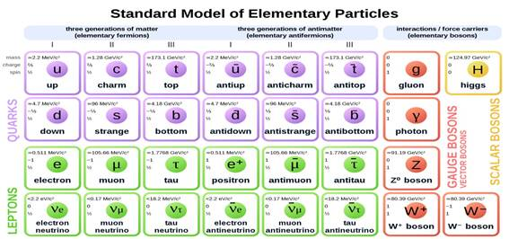
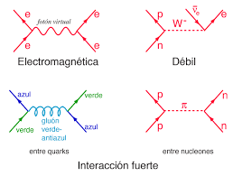
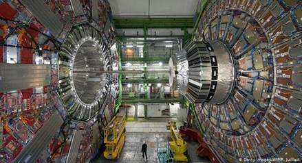

Desde la década de 1930, la comunidad científica investigadora en física ha desarrollado una notable comprensión de la estructura fundamental de la materia: se ha descubierto que todo en el universo está hecho de unos pocos constituyentes básicos llamados "partículas fundamentales", los cuales están gobernados por cuatro "fuerzas fundamentales". El Modelo Estándar de la Física de Partículas es la mejor forma de entender cómo se relacionan estas partículas y tres de las fuerzas que rigen sus comportamientos. Este modelo físico, desarrollado a principios de la década de 1970, ha conseguido explicar con éxito casi todos los resultados experimentales obtenidos y ha predicho con precisión una gran variedad de fenómenos que después se han observado. Con el tiempo y a través de muchos experimentos, el Modelo Estándar se ha consolidado como una teoría física bien probada que consigue describir nuestro mundo en sus escalas más pequeñas.
Toda la materia que nos rodea, desde una pelota de fútbol hasta la gran estrella que ilumina nuestro cielo, el Sol, está formada por partículas fundamentales, también llamadas elementales, que son los componentes básicos de la materia. Estas partículas se clasifican en dos tipos o grupos: quarks y leptones. Cada grupo consta de seis partículas, que se relacionan por pares o "generaciones". Las partículas más ligeras y estables constituyen la primera generación, mientras que las más pesadas y menos estables pertenecen a la segunda y tercera. Toda la materia estable del universo está formada por partículas que pertenecen a la primera generación, ya que cualquier partícula más pesada decae rápidamente en otras más estables. Los seis quarks están emparejados en tres generaciones: el "quark up" (quark arriba) y el "quark down" (quark abajo) forman la primera generación, seguidos por el "quark charm" (quark encanto) y el "quark strange" (quark extraño), y luego el "quark top" (quark cima) y el "quark bottom" (quark fondo). Los seis leptones están dispuestos de forma similar en tres generaciones: el "electrón" y el "neutrino del electrón", el "muón" y el "neutrino del muón", y el "tau" y el "neutrino del tau". El electrón, el muón y el tau tienen una carga eléctrica y una masa considerable, mientras que los neutrinos son eléctricamente neutros y tienen muy poca masa

Imagen 1. Modelo estándar de partículas elementales
En el universo actúan cuatro fuerzas fundamentales: la fuerza fuerte, la fuerza débil, la fuerza electromagnética y la fuerza gravitatoria. Tres de las fuerzas fundamentales, la fuerza fuerte, la débil y la electromagnética, son el resultado del intercambio de partículas portadoras de fuerza, que pertenecen a un grupo más amplio llamado "bosones". Las partículas de la materia transfieren cantidades discretas de energía intercambiando bosones entre sí. Cada fuerza fundamental tiene su propio bosón correspondiente: la fuerza fuerte es transportada por el "gluón", la fuerza electromagnética por el "fotón" y los "bosones W y Z" son responsables de la fuerza débil.
|  |
Imagen 1. Interacción de partículas en las fuerzas elementales
Se les llama partículas elementales ya que no están constituidas por partículas más pequeñas. Éstas se pueden clasificar en quarks, leptones y bosones: los iniciales son responsables de la formación y estructura de los núcleos atómicos y de las interacciones con su entorno; entre los segundos se encuentran los muy familiares electrones y los neutrinos, ya no tan conocidos pese a que llegan a la Tierra transportados por los rayos cósmicos y a que cientos de millones de ellos nos atraviesan a cada segundo; y en el último rubro tenemos cosas como el Bosón de Higgs, recién descubierto y que posibilita que todas las partículas elementales tengan masa.
El interés por este tema data de inicios del siglo XX, cuando los científicos descubrieron los rayos cósmicos y al día de hoy, los esfuerzos por profundizar en el asunto continúa, al grado de originar iniciativas tan ambiciosas como el Gran Colisionador de Hadrones (LHC, por sus siglas en inglés), considerado el proyecto de investigación más grande y complejo de la historia
Imagen 3. Acelerador de partículas
|  |
Aunque el Modelo Estándar es actualmente la mejor descripción que existe del mundo subatómico, no lo explica al completo. Como ya hemos contado, este modelo sólo incorpora tres de las cuatro fuerzas fundamentales, omitiendo la gravedad.
Así pues, aunque el Modelo Estándar describe con precisión los fenómenos de su ámbito, sigue siendo incompleto. Tal vez sea solo una parte de un marco teórico mucho más amplio que incluye nueva física oculta en las profundidades del mundo subatómico o en los recovecos oscuros del universo. Futuros experimentos de física de partículas nos ayudarán a encontrar respuestas a las piezas que faltan.
Referencias:
El modelo estándar de la física de partículas.https://www.i-cpan.es/es/content/el-modelo-est%C3%A1ndar-de-la-f%C3%ADsica-de-part%C3%ADculas